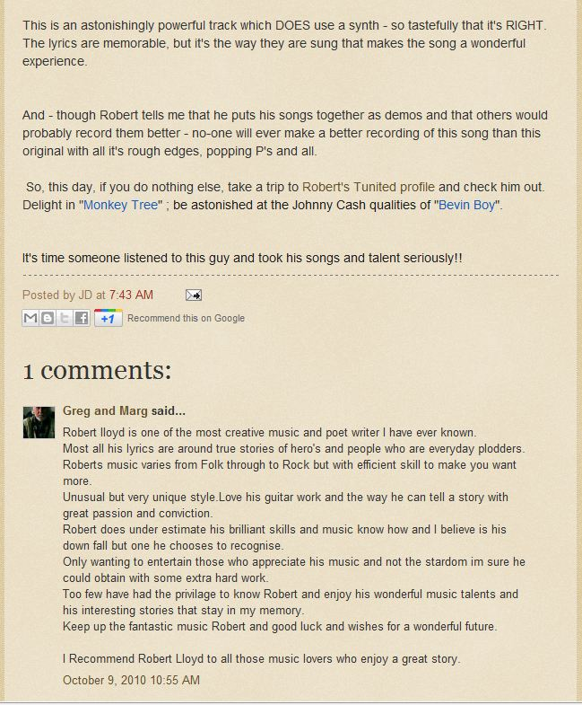

Songs
ALL OF THE FOLLOWING TRACKS WERE WRITTEN AND PLAYED BY ROBERT LLOYD
Copyright exists on all material and intellectual property but permission is hereby given to download any or all tracks for personal private use only
Archies Song
Archie (my Dad) always threatened to return to his first love "the sea"
CHORUS:-
"Three times around the world in thirty different countries"
A girl in every port or so they say
But the girl in every dream was the Co-op dancing queen
He'll go back home and marry her some day
(Well he)
Paid off down in old Cape Town, Hit the bars and ran- around
Time for those Africana girls and sun
But he dreamed of his dancing queen and all those oceans in between
(So he) signed on for the North Atlantic run
Well he knew he was getting closer in Halifax, Novia Scotia
Close enough to realise his dream
He problems started when -his ship could just do ten
The rest of the convoy they we making fifteen.
CHORUS
In the dog watch late at night that port and starboard lights
Were disappearing fast across the foam
But the pole star and the plough stayed over his port bow
And guided that old sea-dog straight back home
With his demob suit and pay he gambled all the way
From Liverpool to Brighton over-night
So just like in his dream he married his dancing queen
Both of the families said "well it just aint right"
CHORUS
Well he did not stand a chance when she taught him how to dance
They were reeling ,rocking and rolling every day
Well it was fifty years ago today she stole his heart away hey hey
And no-one gave them half a chance , no-one gave them half a chance
And no-one gave them half a chance - NO WAY
CHORUS
fini : and no-one gave them half a chance x 3 - NO WAY!
Black Che Guevara Beret
A little kid learns how to overcome the outward signs of his poverty by creating a persona in the image of Che Guevara - his hero . With disasterous consequences.
*A "mulato" is an affectionate term for black/hispanic mixed race person derived from the Spanish word for mule - I have added " - tito" to denote a small child.... *
(guitar intro)
Mulatito in the schoolyard - Cries when his Ma walks away
Children are dancing and laughing at his hand-me-down "blue d' travais"
Every year he gets stronger and dresses the same very day
But she confessed she loved him the best in his black Che Guevara beret
(guitar)
She tells him of great revolution - freedom for all is the way
He makes it his greatest ambition - to be like his hero some day
Mulato teen in the schoolyard dressed up and standing in line
Cross belts of faux amunition on show and replica M1 Carbine
(guitar)
He feigns a bead on the teacher - shoulders the carbine in play
But young rookie cop's Smith and Weston is already turning his way
Too hot to question the action - the trigger is squeezed all the way the
With one single round the boy falls to the ground in his (black Che Guevara beret) x2
(guitar)
The school yard is crowded wuth children - each with a pretty bouquet
Wearing blue dungarees with a tear in the knees - (and a black Che Guevara Beret) x 2
Wearing blue dungarees with a tear in the knees - (and a black Che Guevara Beret) x 2
Bevin Boy
(guitar intro)
Bobs Boogie
Butterfly
Butterflies are not immune from heavy rainfall - I saw one fall to the ground then watched as the sun dried its wings and it eventually flew away.
Should have known I could not change - believing every word
I even gave you space and time - aint that just absurd
Because your love just gave me wings -(I was) flying like a bird
Then falling like a butterfly - in the rain
I need the warmth of your sweet love to dry my wings again
I should have known you could not change - I still taste those lies
To trust is such a crazy thing while learning to despise
I tell myself - now don't look down, experience the highs
Then falling like a butterfly in the rain
I need the warmth of your sweet love to dry my wings again
Sometimes it feel we get it right - or so it might have seemed
It only took one drunken night to tear it at the seems
To get that high loke we have done like flying in my dreams
(Then falling like a butterfly -in the rain
I need the warmth of your sweet love
To dry my wings again) x2
Ditchling Fair
(guitar intro)
Jane O Green
I sat on the step and watched a swallow fly down while Jane was swimming and scoop a drink from the water.
Magical!
(guitar intro)
Matthew 7:24
When asked to read the lesson when I was a little kid I didn't understand and I learned the passage of by heart. That text was from the New Testament : Matthew 7:24
(guitar intro)
My Song Of You
(guitar intro)
Pre CBS
(guitar intro)
Rhuban Uptons Crook
(guitar intro)
Seven Keys
(guitar intro)
Songs Of Abraham
The middle East conflict has its origins in the family tension and eventual hatred between the sons of Araham
(guitar intro)
Stick Song
(guitar intro)
Tell Me Tell Me True
(guitar intro)
Waiting For The Girl
(guitar intro)
Reviews
RADIO PLAY OF "TELL ME TELL ME TRUE" ON RADIO UK INTERNATIONAL
This critical review of Robert Lloyd songs was posted by John D Wilson in October 2010 (on the blog website Windy Ridge -what it looks like from here)
John D Wilson is a successful singer/songwriter who has had USA Country Chart No1 hit song and who has been professionally involved in reviewing indie songs in USA - so who am I to argue!

